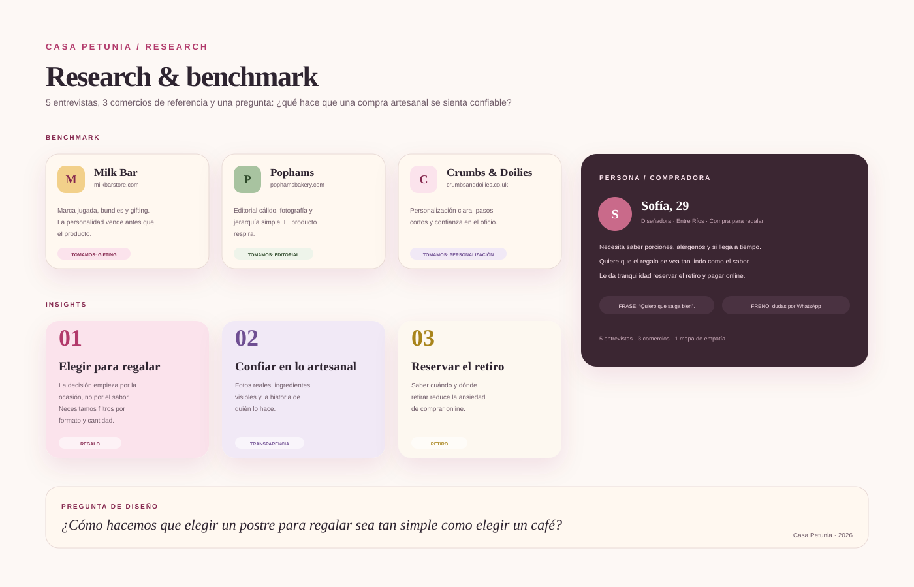
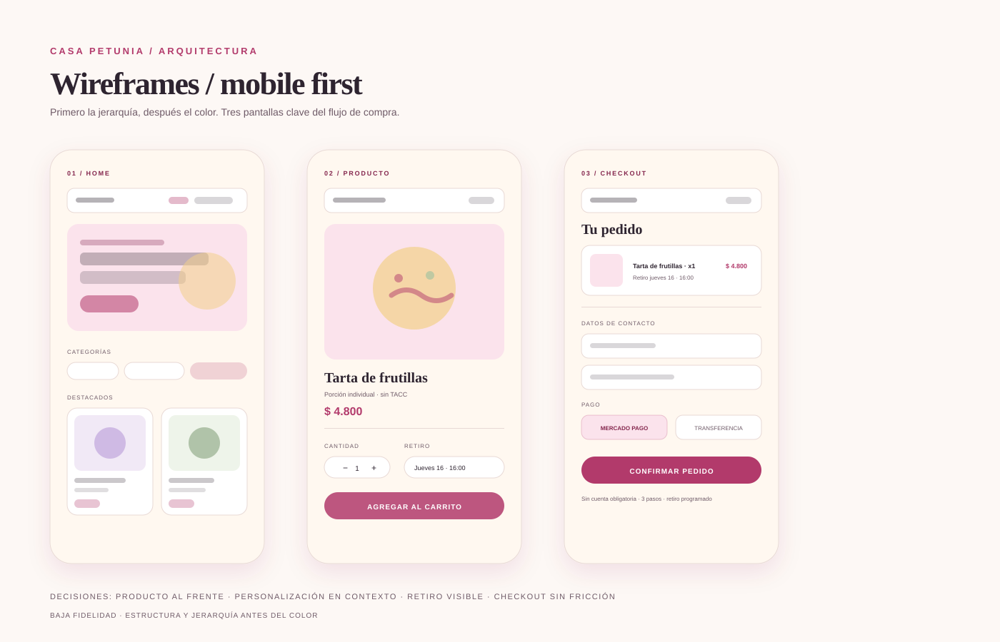
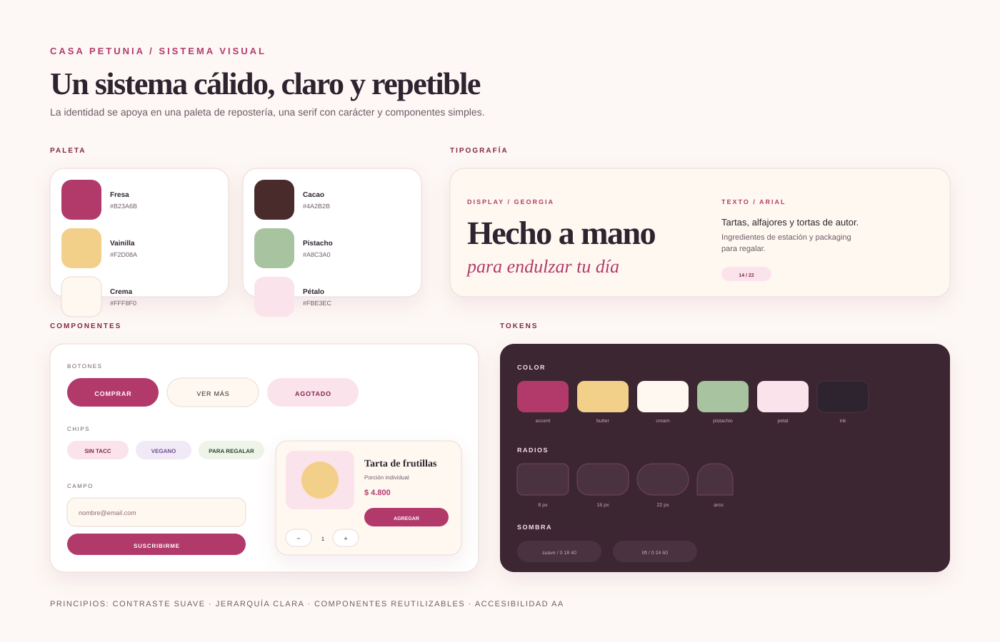
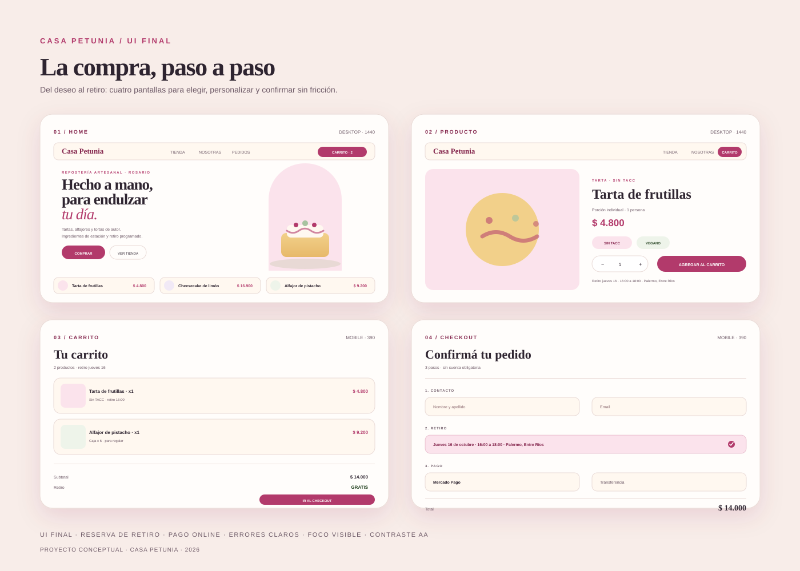

La ocasión manda
La decisión empieza por el para qué: cumpleaños, agradecimiento, visita. El sabor aparece después.
Una tienda online para una repostería artesanal de Entre Ríos. El desafío: convertir el cuidado de lo hecho a mano en una experiencia digital confiable, simple y con carácter.

01 / Contexto
Casa Petunia es una repostería artesanal ficticia de Entre Ríos que vende tartas, alfajores y tortas de autor. Su diferencial está en el trabajo manual, los ingredientes de estación y el packaging pensado para regalar. La marca ya tenía identidad y clientes; lo que faltaba era una experiencia digital a la altura.
El punto de partida era una cuenta de Instagram con pedidos por mensaje directo. El proceso funcionaba, pero dependía de conversaciones largas para responder siempre lo mismo: porciones, alérgenos, disponibilidad, formas de pago y horarios de retiro. Cada consulta era una oportunidad de perder una venta.
Diseñar un e-commerce que permitiera elegir, personalizar y reservar un pedido sin abandonar la calidez de lo artesanal. La interfaz debía responder las dudas antes de que aparecieran y hacer que el retiro programado se sintiera parte del regalo.
Si mostramos el producto con fotografía real, porciones claras y retiro visible desde el inicio, las personas pueden decidir con confianza y completar la compra sin necesitar una conversación previa.
Que lo artesanal se vea y se entienda antes de comprar.
Menos pasos, menos dudas y un checkout sin cuenta obligatoria.
Una marca cálida, editorial y humana, sin perder claridad.
02 / Research
Realicé cinco entrevistas semiestructuradas a personas que compran postres para regalar o para ocasiones especiales, y analicé tres comercios de referencia del rubro artesanal. El objetivo no era validar una idea, sino entender qué hace que una compra se sienta confiable.
La decisión empieza por el para qué: cumpleaños, agradecimiento, visita. El sabor aparece después.
Fotos reales, ingredientes visibles y la historia de quién lo hace reducen la sensación de riesgo.
Saber cuándo y dónde retirar elimina la ansiedad de comprar comida online.
“Quiero que salga bien. Si tengo que preguntar diez cosas por WhatsApp, capaz lo dejo para otro día.”

Lo que decidimos evitar: grillas infinitas, descripciones genéricas y carritos que esconden el costo de envío o el retiro hasta el final.
03 / Arquitectura
Ordené el sitio en cuatro áreas: descubrir, elegir, personalizar y confirmar. La navegación principal quedó corta —Tienda, Nosotras, Pedidos— y el carrito siempre visible. El retiro se eligió temprano, no al final, para que el checkout no sorprendiera a nadie.
Los wireframes se trabajaron primero en mobile, porque la mayoría de las compras por Instagram ocurren desde el teléfono. La versión desktop reutiliza la misma jerarquía, sin agregar contenido decorativo que distraiga.

04 / Sistema visual
La identidad toma la calidez de la repostería sin caer en el rosa genérico. La paleta combina fresa, vainilla, crema, cacao y pistacho, con la serif como voz principal y una sans geométrica para la interfaz. Los arcos, las líneas botánicas y los stickers aparecen como detalles, nunca como ruido.
El sistema se documentó en Figma con tokens de color, tipografía, radios, sombras y componentes. Cada componente tiene estados hover, focus y disabled, y se revisó el contraste para cumplir AA.

Tipografía
Fraunces + Outfit
Serif con carácter para la marca; sans clara para la compra.
Accesibilidad
Contraste AA + foco visible
Estados de foco en todos los controles y textos legibles a 200%.
05 / Solución
La solución final es una tienda que combina una portada editorial con un flujo de compra directo. La home presenta la marca y los destacados; la ficha resuelve las dudas; el carrito y el checkout confirman el retiro y el pago en tres pasos.

06 / Validación
Hice dos rondas de prueba con cinco personas: una con wireframes y otra con el prototipo de alta fidelidad. Las tareas fueron elegir un producto para regalar, reservar el retiro y confirmar el pedido.
Hallazgo 01
Las porciones no eran claras. Se agregó cantidad de personas y una referencia visual.
Hallazgo 02
El retiro aparecía tarde. Se adelantó a la ficha y se repitió en el checkout.
Hallazgo 03
Faltaban fotos del packaging. Se incorporó una vista de la caja y una nota para regalar.
La segunda ronda no necesitó explicaciones para llegar al checkout. Las personas encontraron el retiro, entendieron las porciones y completaron el flujo sin ayuda. El test también mostró que el lenguaje de la marca puede ser cálido sin volverse confuso: las etiquetas de acción se mantuvieron directas.
07 / Resultados
El entregable final incluye la investigación sintetizada, la arquitectura, los wireframes, el sistema visual, doce pantallas de alta fidelidad y una primera implementación front-end responsive. Al ser un proyecto conceptual, no hay métricas de producción: los resultados son cualitativos y las métricas de negocio quedan propuestas para una próxima iteración.
12
Pantallas documentadas
Home, tienda, producto, carrito, checkout, confirmación y estados.
01
Sistema visual
Tokens, componentes y reglas de uso listos para escalar.
3
Pasos de checkout
Contacto, retiro y pago. Sin cuenta obligatoria.
5
Pruebas de usabilidad
Dos rondas con hallazgos aplicados al prototipo.
Métricas propuestas para la próxima etapa
08 / Aprendizajes
El mayor aprendizaje fue que la calidez no está en agregar adornos, sino en anticipar lo que la persona necesita. Un retiro visible, una porción clara y un checkout corto comunican más cuidado que cualquier ilustración.
También entendí el valor de documentar el sistema desde el principio: cuando llegó el momento de construir, las decisiones ya estaban tomadas y el front-end pudo avanzar sin reinventar componentes. La próxima iteración debería incluir pruebas con personas mayores y una revisión de accesibilidad con lector de pantalla.
Contacto
Research, diseño y código con una mirada editorial. Contame qué tenés en mente y lo pensamos juntas.